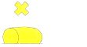

| 271. Виждате следната веха. Какво означава?: |
|
Знак за безопасни води Знак за отделни опасности Латерален знак Кардинален знак |
| документ регламентиращ правилния отговор: IALA Maritime Buoyage System NP 735 Diagram 7 |
| 272. За какво се използват специалните знаци?: |
|
Да укажат на мореплавателя особености или обекти, посочени в навигационните пособия за плаване За дублиране на знаци за нови опасности Да укажат, че водите около тях са плавателни Да означат началните точки на фарватерите |
| документ регламентиращ правилния отговор: IALA Maritime Buoyage System NP 735 (6.1) |
| 273. Какви топови фигури имат специалните знаци?: |
|
Два черни конуса един над друг Една жълта кръстовидна фигура Две черни сфери една над друга Една червена цилиндрична фигура |
| документ регламентиращ правилния отговор: IALA Maritime Buoyage System NP 735 (6.2) |
| 274. Какъв цвят имат специалните знаци?: |
|
Черен, с червени хоризонтални ленти Червен Жълт Зелен с черни вертикални ленти |
| документ регламентиращ правилния отговор: IALA Maritime Buoyage System NP 735 (6.3) |
| 275. Какъв цвят имат светлините на специалните знаци (когато са осветени)?: |
|
Бял Червен Зелен Жълт |
| документ регламентиращ правилния отговор: IALA Maritime Buoyage System NP 735 (6.5) |
| 276. Виждате следната топова фигура. На какъв знак се поставя?: |
|
За изолирана опасност За безопасни води Кардинален Специален |
| документ регламентиращ правилния отговор: IALA Maritime Buoyage System NP 735 Diagram 8 |
| 277. Виждате следния стълбовиден знак. Какво означава?: |
|
Знак за безопасни води Специален знак Знак за отделни опасности Кардинален знак |
| документ регламентиращ правилния отговор: IALA Maritime Buoyage System NP 735 Diagram 8 |
| 278. Виждате следния цилиндричен знак. Какво означава?:  |
|
Специален знак Знак за безопасни води Знак за отделни опасности Кардинален знак |
| документ регламентиращ правилния отговор: IALA Maritime Buoyage System NP 735 Diagram 8 |
| 279. Виждате следната веха. Какво означава?: |
|
Знак за безопасни води Знак за отделни опасности Кардинален знак Специален знак |
| документ регламентиращ правилния отговор: IALA Maritime Buoyage System NP 735 Diagram 8 |
| 280. Виждате следния цилиндричен знак. Какво означава?: |
|
Кардинален знак Знак за безопасни води Специален знак Знак за отделни опасности |
| документ регламентиращ правилния отговор: IALA Maritime Buoyage System NP 735 Diagram 8 |